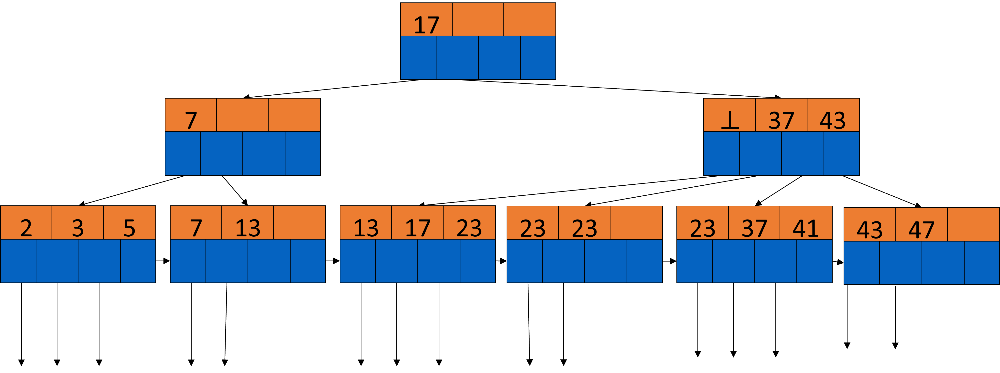
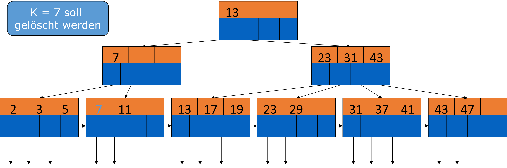
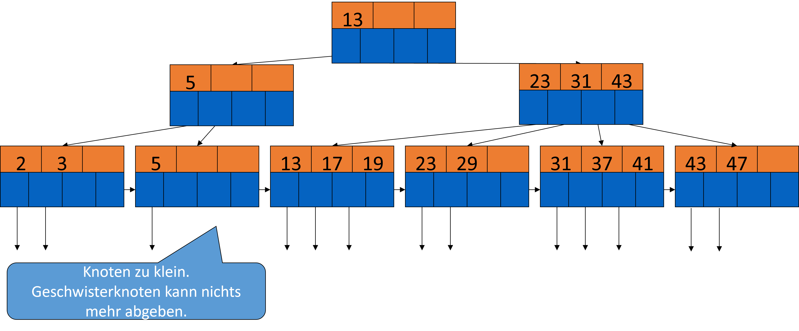
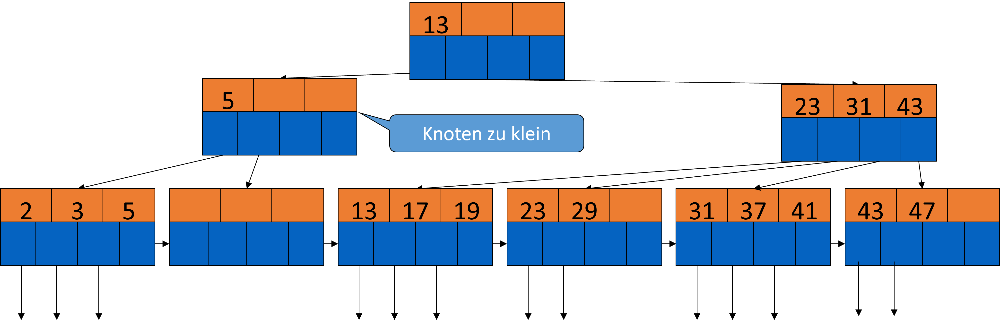
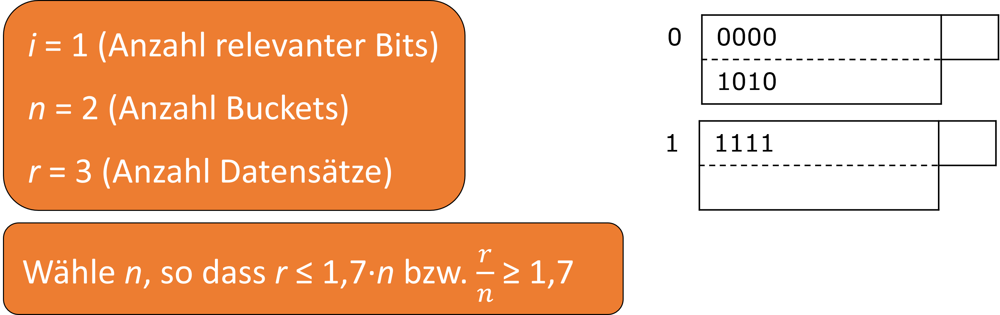

3. Indizes#
Im vorherigen Kapitel wurde schon erwähnt, dass der Zugriff auf Daten durch Indizes beschleunigt werden kann. Nach einem naiven Ansatz, wo die Datensätze beliebig verteilt sind, muss jeder Block untersucht werden, wenn wir die Anfrage SELECT * FROM R ausführen. Eine Verbesserung davon wäre, die Tupel einer Relation zusammenhängend zu speichern. Wenn wir die Anfrage SELECT * FROM R WHERE a=10 ausführen wollen, müssen jedoch alle Datensätze betrachtet werden.
Noch besser im Gegensatz dazu ist die Benutzung von Indizes. Es werden Eigenschaften von Datensätzen, wie z.B „Suchschlüssel“ (nicht zu verwechseln mit Primärschlüssel, Sekundärschlüssel, Sortierschlüssel) festgelegt. Der Suchschlüssel ist der Wert, nach welchem gesucht werden soll. Das Ziel ist unter anderem, I/O-Kosten zu minimieren und möglichst wenige Datensätze zu betrachten. Durch richtiges Verwenden von Indizes kommt es zu einem schnelleren Output der entsprechenden Tupel.

3.1. Indizes auf sequenziellen Dateien#
3.1.1. Einfachste Form eines Index#
Je nachdem wie die Tupel organisiert sind, gibt es verschiedene Varianten Indizes anzulegen. Die einfachste Form davon ist, wenn eine nach unserem Suchschlüssel sortierte Datei gegeben ist. Dazu gibt es eine Indexdatei, welche Schlüssel-Pointer Paare enthält. Jeder Schlüsselwert K ist mit einem Pointer verbunden, welcher auf den Datensatz zeigt, der den Schlüsselwert K enthält. Davon gibt es zwei Varianten, einmal den dichtbestzten und einmal den dünnbesetzten Index. Im dichtbesetzten Index gibt es für jeden Datensatz einen Eintrag im Index. Im dünnbesetzten Index, werden nur einige Datensätze im Index repräsentiert, z.B ein Eintrag pro Block.
Sequenzielle Dateien: Index Beispiel
In der folgenden Abbildung sind sequenzielle Daten dargestellt. Es werden jeweils zwei Tupel pro Block gespeichert und es werden insgesamt 5 Blöcke, für unsere 10 Tupel benötigt. In unserem Beispiel ist der Schlüssel eine Zahl. Häufig ist der Suchschlüssel auch der Primärschlüssel. Das Schlüsselfeld steht einfachheitshalber an erster Stelle. Um beispielsweise den Wert 70 zu finden, müssen 4 Blöcke gelesen werden. Im Folgenden sehen wir, wie das mit Indizes verbessert werden kann.
{kind=link}
3.1.2. Dichtbesetzte Indizes#
Ein dichtbesetzter Index bildet sich aus einer Blocksequenz mit Schlüssel-Pointer Paaren. Jeder Schlüssel der Daten ist durch ein Paar repräsentiert. Die Datenmenge ist aber wesentlich kleiner, da im Index nur auf bestimmte Attribute gezeigt wird. Daher passt der Index womöglich in den Hauptspeicher und braucht nur einen I/O pro Zugriff. Die Sortierung der Paare entspricht der Sortierung der Daten.
Anfragebearbeitung mit dichtbesetzten Indizes
Es ist ein Suchschlüssel K gegeben. Die Indexdatei wird nach K durchsucht und es wird dem zugehörigen Pointer gefolgt. Der Block wird dann aus der Datendatei geladen. Wenn die Indexdatei nur wenige Blöcke hat, befindet sie sich schon im Hauptspeicher. Andernfalls wird die binäre Suche angewendet um K zu finden.
Beispiel: Wir haben 1.000.000 Tupel gegeben. Ein Block speichert 4096 Byte = 10 Tupel. Die Gesamtgröße beträgt demnach 400 MB. Zusätzlich belegt ein Schlüsselfeld je 30 Byte und ein Pointer 8 Byte, d.h. wir haben 100 Paare pro Block. Für einen dichtbesetzten Index sind 10.000 Blöcke notwendig, das sind 40 MB (vielleicht OK im Hauptspeicher). Bei der binären Suche werden 13-14 Blocks pro Suche betrachtet (log2(10.000) ≈ 13). Es reicht wenn die wichtigsten Blöcke im Hauptspeicher sind.

3.1.3. Dünnbesetzte Indizes#
Da wir eine sortierte Liste gegeben haben, kann auch ein dünnbesetzter Index eingesetzt werden. Hierbei ist der Schlüsselwert der kleinste Wert des referenzierten Blocks und es gibt nur einen Pointer pro Block. Der Vorteil ist weniger Speicherbedarf, jedoch erhöht sich der Suchaufwand.
Beispiel:
Wir haben 1.000.000 Tupel gegeben. Ein Block speichert 4096 Byte = 10 Tupel. Die Gesamtgröße beträgt demnach 400 MB. Zusätzlich belegt ein Schlüsselfeld je 30 Byte und ein Pointer 8 Byte, d.h. wir haben 100 Paare pro Block. Nun gibt es 100.000 Datenblöcke und 100 Indexpaare pro Block. Demnach sind für einen dünnbesetzten Index 1.000 Blocks = 4MB notwendig, welches erheblich weniger als 400MB ist.
3.1.3.1. Anfragebearbeitung mit dünnbesetzten Indizes#
Suche im Index größten Schlüssel, der gleich/kleiner als Suchschlüssel ist (leicht modifizierte binäre Suche)
Hole assoziierten Datenblock
Durchsuche Block nach Datensatz
Was kann ein dünnbesetzter Index nicht?
Mit ausschließlich einem dünnbesetzten Index kann nicht überprüft werden, ob ein bestimmter Wert vorhanden ist oder nicht.
Beispiel: SELECT 'TRUE' FROM R WHERE a=10.
Mit einem dichtbesetzten Index ist das möglich. Gleiches gilt für einen Semi-Join.

{kind=link}
{kind=link}
3.1.4. Mehrstufiger Index#
Auch ein Index kann unangenehm groß sein, z.B GB groß oder sogar größer als die Datensätze selbst. Das nimmt viel Speicher ein und kostet viel I/O, auch bei binärer Suche. In diesem Fall lohnt es sich die Indexdatei auch zu indexieren. Der zweite Index macht nur als dünnbesetzten Index Sinn. Theoretisch sind auch dritte, vierte, … Ebenen möglich, in diesen Fällen ist ein B-Baum besser geeignet (dazu später).
Mehrstufiger Index Beispiel
Wir haben 1.000.000 Tupel gegeben. Ein Block speichert 4096 Byte = 10 Tupel. Die Gesamtgröße beträgt demnach 400 MB. Zusätzlich belegt ein Schlüsselfeld je 30 Byte und ein Pointer 8 Byte, d.h. wir haben 100 Paare pro Block. Nun gibt es 100.000 Datenblöcke und 100 Indexpaare pro Block. Für den Index erster Stufe sind 1.000 Blöcke = 4MB und für den Index zweiter Stufe = 40KB nötig. Der Index kann daher mit Sicherheit im Hauptspeicher verbleiben.
Vorgehen zur Anfragebearbeitung
Suche im Index zweiter Stufe den größten Schlüssel, der kleiner/gleich als Suchschlüssel ist.
Hole entsprechenden Block im Index erster Stufe (eventuell schon im Hauptspeicher)
Suche in dem Block den größten Schlüssel, der kleiner/gleich als Suchschlüssel ist.
Hole den entsprechenden Datenblock.
Suche den Datensatz (falls Index erster Stufe dünnbesetzt ist).
=> Für das Beispiel oben sind zusammen nur 2 I/Os nötig

3.1.5. Indizes für Nicht-eindeutige Suchschlüssel#
Bisher haben wir angenommen, das unser Suchschlüssel auch ein Schlüssel ist bzw. nur maximal einmal in unserer Relation vorkommt. Jetzt betrachten wir die Indexwahl, wenn der Suchschlüssel nicht-eindeutig ist. Wir nehmen weiterhin an, dass die Relation nach unserem Suchschlüssel sortiert ist.
Idee 1: Dichtbesetzter Index
Es gibt ein Paar im Index für jeden Datensatz. Die Anfragebearbeitung verläuft wie folgt:
Suche erstes Paar mit K.
Wähle alle weiteren mit K (direkt dahinter)
Hole entsprechende Datensätze.
Idee 2: Nur ein Indexpaar pro eindeutigem Schlüsselwert K
Der Index zeigt auf den ersten Datensatz mit K. Alle weiteren Datensätze mit K folgen direkt. Wichtig zu beachten ist hier, dass die Blöcke Pointer auf den jeweils nächsten Block haben.

Idee 3: Dünnbesetzter Index wie gehabt
Der Datenwert wird jeweils am Blockanfang des Datensatzes indexiert.
Die Anfragebearbeitung ist wie folgt:
Suche letzten Eintrag E1 im Index, dessen Datenwert ≤ K
Suche von dort im Index nach vorn bis zu einem Eintrag E2 mit Datenwert < K
Hole alle Datenblöcke zwischen und inklusive E1 und E2.
Beispiel: Wir suchen K = 20. Zuerst muss im “10er-Block” gesucht werden ,da womöglich auch in diesem Block eine 20 ist. Eine Rückwärtssuche ist nötig

Idee 4: Dünnbesetzter Index, aber…
…der im Index gespeicherte Datenwert ist der kleinste neue Wert im entsprechenden Datenblock.
Die Anfragebearbeitung ist so einfacher:
Suche im Index nach Paar mit (Datenwert = K) oder (größter Wert mit < K aber nächster Wert ist > K).
Hole Datenblock und gegebenenfalls folgende Datenblöcke.
Im Beispiel unten zeigt das ⊥ ,dass nach der „30“ kein neuer kleinster Wert mehr folgt.

3.1.6. Änderungsoperationen#
Daten ändern sich durch Insert-, Update-, und Deleteoperationen. Unsere bisherige Annahme ist, dass die Daten die Blöcke perfekt füllen und sich nicht ändern. Wenn jedoch Änderungen im Datenblock passieren, verändern sich die Indizes wie folgt:
Overflow Blocks werden in dünnbesetzten Indizes beispielsweise nicht repräsentiert. Neue Blöcke in der Sequenz hingegen benötigen einen neuen Indexeintrag. Diese Indexänderung birgt dieselben Probleme wie einen Datenänderung: Eine neuplatzierung der Blöcke und Indizes mit höheren Stufen. Werden Tupel verschoben, muss der Index nur angepasst werden.
Generell können Indizes wie normale data files behandelt werden und es können dieselben Strategien angewendet werden.
Änderungsoperationen Beispiele

Beispiel 1: Dichtbesetzter Index
Der Datensatz mit K = 30 wird gelöscht. Wir nehmen an der Block kann/soll nicht reorganisiert werden und an der gelöschten Stell wird ein Grabstein gesetzt. Der Datensatz 40 wird nicht verschoben und der Index wird reorganisiert werden, wenn er sich im Hauptspeicher befindet.

Beispiel 2: Dünnbesetzter Index
Der Datensatz mit K = 30 wird gelöscht. Wir nehmen an der Block kann/soll reorganisiert werden. Der Datensatz 40 wird nach dem Löschen der 30 verschoben und der Index wird aktualisiert. Wenn nun auch Datensatz mit K=40 gelöscht werden soll entsteht ein leerer Block und die 50 und 70 schieben sich nach oben.

Beispiel 3: Dünnbesetzter Index
Einfügen eines Datensatzes 15: Die 15 müsste zwischen die 10 und 20, aber Block 1 ist voll. Demnach wird der Datensatz 20 in den nächsten Block verschoben und der Block wird reorganisiert. Der Datensatz 15 wird eingefügt und der Index wird aktualisiert.

Beispiel 4: Dünnbesetzter Index
Eine weitere Möglichkeit die 15 einzufügen ist mit einem Overflow Block. Der Block 1 ist weiterhin voll. Der Datensatz 20 wird in einen Overflow Block verschoben und der Datensatz 15 wird eingefügt. Der Index bleibt in diesem Fall gleich.

3.2. Sekundärindizes auf nichtsequenziellen Dateien#
Zuvor haben wir uns mit Primärindizes, also sortierten Daten, beschäftigt. Oft ist es aber sinnvoll, mehrere Indizes pro Relation zu haben. Damit kommen wir zu nichtsequentiellen Dateien, also unsortierten Daten. Im folgenden Beispiel haben wir die Relation Schauspieler, in welcher der Name der Primärschlüssel ist. Suchen wir nun das Geburtsdatum, müssen wir von Block zu Block springen und können keine Annahme über nachfolgende Blöcke treffen.
SELECT Name, Adresse
FROM Schauspieler
WHERE Geburtstag = DATE '1952-01-01'
Nutzen wir nun einen Sekundärindex auf Geburtstag, beschleunigen wir die Anfragebearbeitung. Dieser Index kann nur im Nachhinein erstellt werde, da die Daten bereits vorliegen, anders als beim Primärindex, bei dem man im Optimalfall die Tupel während des Einfügens schon sortieren kann.
CREATE INDEX GEB_IDX ON Schauspieler(Geburtstag)
Sekundärindizes bestimmen nicht die Platzierung der Datensätze, sondern geben nur den Speicherort an. Deshalb sind dünnbesetzte Indizes sinnlos, da wir beispielsweise nicht wissen, ob die gleichen Geburtstage innerhalb des gleichen Blocks liegen oder auf vielen verschiedenen Blöcken verteilt sind.
3.2.1. Aufbau von Sekundärindizes#
Wie zuvor erwähnt sind Sekundärindizes dichtbesetzt. Die Schlüssel sind dabei schon sortiert und es können Duplikate vorkommen. Ein Index der zweiten Stufe wäre wiederum dünnbesetzt. Die Suche hat in der Regel hohe I/O-Kosten. Suchen wir beispielsweise die 20 müssen fünf Blöcke gelesen werden. Das lässt sich auch leider nicht ändern, da die Daten nach einem anderen Schlüssel sortiert sind.

3.2.2. Anwedungen#
Es gibt Anfragen, die sich auf mehrere Attribute beziehen. Dann braucht man mehrere Indizes. Liegen die Daten nicht sortiert vor, nutzt man Sekundärindizes. Diese verbrauchen zwar mehr Speicher, aber wenigstens weiß man dann, wo was liegt. Weiß man, dass Fremdschlüsselbeziehungen existieren, kann man Informationen von zwei Relationen zusammen in sogennanten Clustered files speichern. Das ist besonders effizient, wenn es in einer Anfrage viele Join Operationen gibt.
Anwendung: Clustered file
Filme(Titel, Jahr, Länge, inFarbe, Studioname, Produzent)
Studio(Name, Adresse, Präsident)
Schauen wir uns dazu ein Beispiel an. Wir haben die beiden Relationen Filme und Studio. Studioname ist der Fremdschlüssel zu Name aus der Relation Studio. Häufige Anfragen können wir folgt aussehen:
SELECT Titel, Jahr
FROM Filme, Studio
WHERE Filme.Studioname = Studio.Name
AND Präsident = ?
Abgespeichert wird immer zuerst ein Studio und dann alle Filme aus diesem Studio.

Index auf Präsident findet schnell Studio-Datensatz
Entsprechende Filme folgen direkt
Anfragen direkt nach Filmen benötigen ebenfalls einen Sekundärindex. Ist beispielsweise der Titel der Primärschlüssel, muss doppelt gespeichert werden, damit die Daten sortiert vorliegen. Da es aber so ist, dass alle Filme jedes Studios jeweils daneben liegen, braucht man einen Sekundärindex, um auch den Primärschlüssel von Filme zu indizieren.
3.2.3. Indirektion für Sekundärindizes#
Bisher haben wir uns clustered files angeschaut und Relationen, bei denen mehrere Attribute indiziert wurden. Dabei kann es leicht passieren, dass Dinge mehrfach indiziert und gespeichert werden. Hier kann die Indirektion Abhilfe schaffen.
Für Nicht-Primärschlüssel kann ein Index sehr groß sein. Aus dem Grund kann man unbestimmte Buckets dazu nehmen, die dann als abstrakte Schlüssel für die entsprechenden Datenpunkte gelten. In der Abbildung unten sieht man, dass die 10 auf so ein Bucket zeigt, in welchem drei Schlüsselpaare sind, die wiederum auf die entsprechenden Werte zeigen.
Dies spart Platz, falls die Suchschlüssel größer sind als der Bucketeintrag und im Durchschnitt mindestens zweimal auftauchen. Ein weiterer Vorteil ist, dass bestimmte Anfragen direkt anhand der Buckets beantwortet werden können. Außerdem können wir bei mehreren Selektionsbedigungen mit jeweils einem Sekundärindex, wie bei der Anfrage unten, die Schnittmenge der Pointer in den Buckets bilden. Hier haben wir jeweils einen Sekundärindex auf StudioName und Jahr. Während die Pointer der Indexeinträge für StudioName auf Buckets zeigen, können parallel die Pointer für Jahr auf dieselben zeigen, so dass man sofort weiß, welche Blöcke gelesen werden müssen.
Filme(Titel, Jahr, Länge, inFarbe, Studioname, Produzent)
SELECT Titel FROM Filme
WHERE StudioName = 'Disney'
AND Jahr = 1995

Indirektion im Alltag
Hier ein weiteres Beispiel für die Indirektion. Sucht man hier ein Wort, stehen die Buckets, in dem Fall die Seitenzahlen, direkt dahinter. Diese Indirektion ist speziell, denn sie hat eine bestimmte Indexstruktur und zwar Invertierte Indizes. Das schauen wir uns im folgenden Absatz genauer an.
{kind=link}
3.2.4. Indexierung mittels invertierter Dateien#
Invertierte Dateien oder auch invertierte Indizes speichern für jeden Term eine Liste mit Verweisen zu allen Vorkommen dieses Terms. Vorkommen sind in dem Sinne Dokumente oder Dateien. Verweise sind aus konzeptioneller Sicht eine ID, die dem jeweiligen Dokument oder der Datei zugeordnet ist.
Bei der Suche nach Dokumenten, die mehrere Terme oder eine bestimmte Konstellation von Termen enthalten sollen, z.B. “Finde alle Dokumente, die zwar Informationen über Golf enthalten aber nicht über VW” können die entsprechenden Dateilisten jedes Termes durch Mengenoperationen zusammengeführt werden. In diesem Beispiel müsste man alle IDs auf die “VW” verweist von allen IDs auf die “Golf” verweist abziehen. Boolesche Operationen wie AND, OR und NOT können hier in linearer Zeit durchgeführt werden, da die Einträge aufsteigend sortiert aufgelistet sind und ermöglichen komplexe Suchanfragen.
In Abbildung 1 sehen wir eine Abbildung von Dokumenten-IDs auf den enthaltenen Text. Jede Zeile steht für eine Datei/ ein Dokument. Die invertierte Datei sehen wir in Abbildung 2.
Abbildung 1
{kind=link}
Abbildung 2
{kind=link}
\(\tiny{Quelle:\ Nagy \ Istvan \ (2001): Indexierung \ mittels \ invertierter \ Dateien. https://www.cis.uni-muenchen.de/people/Schulz/SeminarSoSe2001IR/Nagy/node4.html\#bsp_text }\)
Invertierte Indizes finden ins besondere in Dokumentendatenbanken Anwendung. Für die weiteren Inhalte der Vorlesung spielen sie keine Rolle. Das sollte als Beispiel für die weitere Anwendungen der Indirektion dienen.
3.2.5. B-Bäume#
3.2.5.1. Allgemein#
Bisher haben wir zweistufige Indizes zur Beschleunigung des Zugriffs betrachtet. Jetzt befassen wir uns mit mehrstufige Indizes.
B-Bäume haben so viele Stufen wie nötig. Die Blöcke sind immer mindestens zur Hälfte gefüllt und Overflow blocks sind nicht notwendig. B-Bäume sind außerdem balanciert, d.h. jeder Weg von der Wurzel bis zum Blatt ist gleich lang.

3.2.5.2. Struktur#
Bei B-Bäumen handelt es sich um Index-Blöcke die in einem Baum organisiert sind. Dieser ist balanciert und hat einen Parameter n. Jeder Block enthält bis zu n Suchschlüssel und bis zu n + 1 Pointer, also ein Pointer mehr als die Indexblöcke zuvor. n wird entsprechend der gegebenen Blockgröße so groß wie möglich gewählt. Bei beispielsweise 4096 Byte pro Block, 4 Byte pro Schlüssel und 8 Byte pro Pointer muss unser n = 340 sein:
4 n + 8(n+1) ≤ 4096 => n = 340
Bei einer Höhe von 3 lassen sich damit 340 ∙ 341 ∙ 341 = 39.535.540 Schlüssel indizieren.
3.2.5.3. Einfügen in B-Bäume – Beispiel#
{kind=link}
3.2.5.4. Hier B+ Baum**#
Bei B+ Bäumen sind die Schlüssel in den Blättern die Schlüssel aus den Daten, sortiert über alle Blätter verteilt (von links nach rechts). Die Pointer der Wurzel zeigen auf einen B-Baum Block in der Ebene darunter. Mindestens zwei Pointer werden verwendet. Von den Blättern zeigt der letzte Pointer auf das nächste rechte Blatt, während die übrigen Pointern auf mindestens \( \lfloor \frac {(n+1)}{2} \rfloor\) Datenblöcke zeigen. Die Pointer der inneren Knoten zeigen auch auf die B-Baum Blöcke von darunterliegenden Ebenen. Dabei werden mindestens \( \lceil \frac {(n+1)}{2} \rceil \) verwendet.
Falls j Pointer verwendet werden, gibt es j-1 Schlüssel in einem Block. Der erste Pointer zeigt auf den Teilbaum mit den Schlüsselwerten < K1 während der zweite Pointer auf den Teilbaum mit den Schlüsselwerten ≥ K1 und < K2 zeigt, usw.
3.2.5.5. Rechenbeispiele#
Schauen wir uns das an ein paar Beispielen genauer an. Ist unser n = 3 haben alle Knoten maximal 3 Suchschlüssel und 4 Pointer. Die Wurzel hat mindestens 1 Suchschlüssel und 2 Pointer, während die Blätter mindestens \( \lfloor \frac {(3+1)}{2} \rfloor + 1 \) = 3 Pointer (plus 1 weil der letzte Pointer auf das nächste Blatt zeigt) und 2 Suchschlüssel haben. Die inneren Knoten haben mindestens \( \lceil \frac {(3+1)}{2} \rceil \) = 2 Pointer und 1 Suchschüssel.

Analog für n = 4 und n = 5:
n = 4
Alle Knoten: Maximal 4 Suchschlüssel und 5 Pointer
Wurzel: Mindestens 1 Suchschlüssel und 2 Pointer
Innere Knoten: Mindestens \( \lceil \frac {(n+1)}{2} \rceil \) Pointer = 3 Pointer
=> Mindestens 2 Suchschlüssel
Blätter:
1 Pointer zum nächsten Blatt + mindestens \( \lfloor \frac {(n+1)}{2} \rfloor\) weitere Pointer = 3 Pointer
=> Mindestens 2 Suchschlüssel
n = 5
Alle Knoten: Maximal 5 Suchschlüssel und 6 Pointer
Wurzel: Mindestens 1 Suchschlüssel und 2 Pointer
Innere Knoten: Mindestens \( \lceil \frac {(n+1)}{2} \rceil \) Pointer = 3 Pointer
=> Mindestens 2 Suchschlüssel
Blätter:
1 Pointer zum nächsten Blatt + mindestens \( \lfloor \frac {(n+1)}{2} \rfloor\) weitere Pointer = 4 Pointer
=> Mindestens 3 Suchschlüssel
3.2.5.6. Alternative Definition#
In der Vorlesung verwenden wir den Parameter n. In Lehrbüchern wird alternativ aber auch der Parameter k verwendet. Anders als bei der Variante mit n hat ein Block mindestens k und höchstens 2k Suchschlüssel. x + 1 Pointer pro Block bleiben aber. Genauso wie die Tatsache, dass ein innerer Block immer einen Pointer mehr hat als Suchschlüssel und ein Blatt genauso viele Pointer wie Suchschlüssel.
3.2.5.7. Beispiel Blattknoten#
Hier werden wir ein paar Beispiele für Blattknoten mit n = 3 sehen. Das bedeutet, es gibt maximal 3 Schlüssel und 4 Pointer.
Volles Blatt
Hier sehen wir ein volles Blatt. Wir haben die 3 Suchschlüssel 57, 81 und 95 sowie 4 Pointer. Der erste Pointer zeigt zu dem Block mit dem Suchschlüssel 57. Der zweite zu dem Block mit dem Suchschlüssel 81 und der dritte zum Block mit dem Suchschlüssel 95. Der letzte Pointer zeigt auf das nächste Blatt.
{kind=link}
Teilweise gefülltes Blatt
Nun sehen wir ein teilweise gefülltes Blatt. Hier haben wir nur 2 Suchschlüssel, 57 und 81, und 3 Pointer. Die ersten beiden zeigen wieder auf Blöcke mit den Schlüsseln 57 und 81 während der letzte wieder auf das nächste Blatt zeigt. Ein Blatt mit nur einem Suchschlüssel ist nicht erlaubt, da wir mindestens \( \lfloor \frac {(3+1)}{2} \rfloor + 1 \) = 3 Pointer und damit 2 Suchschlüssel benötigen.

3.2.5.8. Beispiel innerer Knoten#
Schauen wir uns das gleiche auch für innere Knoten an.
Voller innerer Knoten
Hier haben wir einen vollen inneren Knoten mit 3 Suchschlüsseln und 4 Pointern. Der erste Pointer zeigt auf die Schlüssel die kleiner sind als 57, der zweite Pointer auf die Schlüssel die größer oder gleich 57 sind und kleiner als 81. Der dritte Pointer zeigt auf die Schlüssel die größer oder gleich 81 und kleiner 95 sind und der letzte Pointer zeigt auf Suchschlüssel größer oder gleich 95.

Teilweise gefüllter innerer Knoten
Bei diesem teilweise gefüllten inneren Knoten haben wir nur einen Suchschlüssel und 2 Pointer. Diese zeigen wiederum auf Suchschlüssel die kleiner als 57 und größer oder gleich 57 sind. Keine Suchschlüssel in einem Knoten zu haben ist nicht erlaubt, da wir mindestens \( \lceil \frac {(3+1)}{2} \rceil \) = 2 Pointer und 1 Suchschüssel benötigen.

3.2.5.9. Beispiel B-Baum#
In dem folgenden Beispiel handelt es sich um einen dichtbesetzten B-Baum mit n = 3, 2 Pointern und einem Suchschlüssel. Dichtbesetzt, das heißt, dass in den Blättern jeder Schlüssel genau einmal sortiert auftaucht.
Schauen wir uns ein paar Knoten genauer an. Mit 13 in der Wurzel gehen alle Zahlen die kleiner sind, auf die linke Seite und alle die größer oder gleich 13 sind auf die rechte. Im darunterliegenden linken Knoten haben wir den Schlüssel 7. Alle Elemente kleiner als 7 gehen in das linke Blatt, alle größer oder gleich 7 in das rechte. Jedes Blatt hat Pointer, die auf Datenblöcke zeigen und einen Pointer, der auf das nächste Blatt zeigt.

3.2.5.10. Anwendungen von B-Bäumen#
B-Bäume können verschiedene Index-Rollen übernehmen. Ist der Suchschlüssel gleichzeitig auch der Primärschlüssel, können wir dichtbesetzte Indizes verwenden. Hierbei spielt es keine Rolle, ob die data files sortiert sind oder nicht. Bei dünnbesetzten Indizes sind die date files immer sortiert. Sollte das aber mal doch nicht der Fall sein, müssen wir Indirektion verwenden. Sollte der Suchschlüssel nicht der Primärschlüssel sein, müssen die data files nach dem Suchschlüssel sortiert sein. Außerdem müssen die Pointer immer auf den jeweils ersten Wert zeigen. Dies schauen wir uns im folgenden Abschnitt genauer an.
3.2.5.11. B-Bäume auf nicht-Primärschlüsseln#
Haben wir B-Bäume auf nicht-Primärschlüsseln, ändert sich die Bedeutung der Pointer auf den inneren Ebenen, da es jetzt vorkommen kann, dass wir Duplikate in unseren Blättern haben.
Gegeben sind wieder die Schlüssel K \(_{1}\) bis K \(_{j}\). K \(_{i}\) ist hierbei der kleinste neue Schlüsselwert, der vom (j+1)-ten Pointer erreichbar ist. Das bedeutet, es gibt keinen Schlüssel K \(_{i}\) im linken Teilbaum, aber mindestens ein Vorkommen des Schlüsselwertes im Teilbaum vom (j+1)-ten Pointer. Das Problem ist: Es gibt nicht immer einen solchen Schlüssel.
{kind=link}
{kind=link}
3.2.6. B-Bäume Suche#
3.2.6.1. Allgemein#
Wir nehmen wieder an, dass unser Suchschlüssel ein Primärschlüssel ist. Jeder Schlüssel ist dann dementsprechend nur einmal in einem Blatt vorhanden, es kommen also keine Duplikaten vor.
Gesucht ist wieder ein Schlüssel K. Wir fangen bei einem Blattknoten an und schauen, ob der Schlüssel dort vorkommt oder nicht. Falls nicht, suchen wir nach einem Paar von Schlüsseln, zwischen denen unser Schlüssel vorkommen könnte und geben den Pointer weiter.
Im Folgenden schauen wir uns zwei Beispiele dazu an.
3.2.6.2. Beispiel Suche im B-Baum#
Suchen wir beispielsweise nach dem Datensatz 40, gehen wir erstmal in den Wurzelknoten. 13 ist hier der einzige Wert. Da 40 größer ist, springen wir zu dem rechten inneren Knoten und können dann mit binärer Suche vergleichen, wo wir weitersuchen müssen. Folgen wir dann dem Pointer zwischen 31 und 43 und suchen in dem Blattknoten, finden wir den Datensatz nicht und sind fertig.

Hier das gleiche Prinzip. 13 ist kleiner als 37, also springen wir auch hier zum rechten inneren Knoten. Wir können wieder dem Pointer zwischen 31 und 43 folgen und finden dann die 37.
{kind=link}
3.2.6.3. Bereichsanfragen (range queries)#
Anfragen mit Ungleichheit in WHERE-Klausel
SELECT * FROM R
WHERE R.k > 40
SELECT * FROM R
WHERE R.k >= 10 AND R.k <= 25
Mit B-Bäumen lassen sich Ungleichheiten, also die Anfrage über bestimmte Bereiche von Werten, effizient behandeln.
Suchen wir zum Beispiel in dem Bereich [a,b], suchen wir zunächst einen Blattknoten der a enthält. Die Suche führen wir solange weiter, bis wir bei b ankommen. Dann können wir unsere Suche abschließen. Haben wir keinen B-Baum, muss die Suche eventuell intensiviert und die Liste vorher sortiert werden.
Bei offenen Bereichen, wie [-∞ , b] bzw. [a, ∞] ist Suche ähnlich.
Im Folgenden ein Beispiel: Wir suchen alle Schlüssel zwischen 10 und 25. Zunächst suchen wir die 10 und gehen links runter in den Block mit der 7 und der 11. Von da schauen wir uns die Blöcke rechts an, bis wir den Block mit der 23 und der 29 erreichen. Da die 29 größer als 25 ist, ist unsere Suche hier beendet.

Schauen wir uns nun an, wie man B-Baume updated.
3.2.7. B-Bäume Updates#
3.2.7.1. Einfügen in B-Bäume#
Möchte man etwas in einen B-Baum einfügen, geht man rekursiv vor. Zunächst suchen wir das entsprechende Blatt. Falls dort Platz ist, fügen wir den Schlüssel und den Pointer ein. Falls nicht, kommt es zum Überlauf. Dabei wird das Blatt in zwei Teile gespalten und die Schlüssel gleichmäßig auf diese verteilt. Durch diesen “split” ist es erforderlich, dass Schlüssel/Pointer-Paare im Elternknoten eingefügt, also rekursiv nach oben geschoben, werden. Sollte die Wurzel voll sein, muss auch diese gesplittet und eine neue mit nur einem Schlüssel erzeugt werden.
Im folgenden Beispiel soll die 40 eingefügt werden. Wir sehen, dass das entsprechende Blatt voll ist, also muss dieses gesplittet werden.
{kind=link}
Nun müssen wir uns fragen, welcher Schlüssel nach oben wandert. Wir nehmen idealerweise das erste Element in einem neuen Block, hier die 40. Diese wandert dann nach oben, sodass wir den Elternknoten auch noch splitten müssen.

Wir brauchen nun ein neues Schlüssel/Pointer-Paar. Da die 40 auch hier das erste Element im neuen Block ist, würde es sich anbieten diese in die Wurzel zu ziehen.

Dadurch müssten wir aber zu viel umstrukturieren, deshalb können wir auch die 31 aus dem linken Block nehmen.

Kosten für Einfügen
Die Kosten für das Einfügen in einen B-Baum sind abhängig von der Höhe h des Baumes. Im Rahmen der Vorlesung haben wir meist B-Bäume der Höhe 3. Die Suche nach einem Blattknoten kostet h. Ist keine Teilung notwendig, muss man nur h Blöcke lesen und 1 Index-Block schreiben. Damit liegen die Gesamtkosten bei h + 1. Falls doch eine Teilung notwendig ist, muss man im schlimmsten Fall bis nach oben zu der Wurzel. Da hilft auch Caching nicht, da die Knoten geschrieben werden müssen. Insgesamt kommt man auf 3 h + 1, da man auf jeder Ebene suchen, teilen und gegebenenfalls Überlauf behandeln und zusätzlich eine neue Wurzel generieren muss.
3.2.7.2. Löschen aus B-Bäumen#
Beim löschen auf einem B-Baum wird der entsprechende Knoten gesucht und der Schlüssel dann gelöscht. Befindet sich dann immer noch die minimale Menge an Schlüsseln im Knoten ist alles gut und wir müssen nichts tun. Sind aber zu wenig Schlüssel im Knoten, müssen wir mergen, d.h. wir können uns aus den Geschwisterknoten links oder rechts die mehr als die minimale Schlüsselmenge haben, einen Schlüssel “klauen”. Dabei müssen auch (fast) immer die Elternknoten angepasst werden. Ist das mergen aber nicht möglich, da die Geschwisterknoten nur die minimale oder sub-minimale Schlüsselmenge besitzen, kann man diese aber vereinen. Auch hier müssen die Elternknoten dann angepasst oder ggf. rekursiv nach oben gelöscht werden.
Schauen wir uns dazu ein Beispiel an. Es soll der Datensatz mit dem Schlüssel 7 gelöscht werden.
{kind=link}
Ohne die 7 sind zu wenig Schlüssel im Knoten, also nehmen wir uns aus dem linken Geschwisterknoten die 5 dazu und passen dann noch den Elternknoten an.

Jetzt soll die 11 entfernt werden.
{kind=link}
Auch hier sind jetzt zu wenig Schlüssel im Knoten. In dem Fall können die Geschwisterknoten aber nichts mehr abgeben, also mergen wir mit dem linken Geschwisterknoten.
{kind=link}
Den leeren Knoten können wir löschen und müssen dann noch den Elterknoten anpassen, da dieser zu klein ist. Die 5 wird da aber nicht mehr gebraucht, also kann diese auch entfernt werden.
{kind=link}
Der zweite Pointer des jetzt leeren Knoten zeigt nun auf den rechten Knoten. Jetzt passt es aber nicht mehr mit der 13 in der Wurzel, deshalb müssen wir hier auch noch eine Anpassung vornehmen.
{kind=link}
Wir ziehen die 13 aus der Wurzel runter und die 23 dafür hoch.
{kind=link}
Kosten für Löschen
Bei der Suche und dem lokale Löschen kommen wir durch das Lesen des Baumes und das Schreiben des Blattknoten auf h + 1. Beim mergen mit Geschwisterknoten geht man den Baum durch bis nach unten, prüft die Knoten links und rechts und schreibt den Block und den veränderten Nachbarn sowie den Elternknoten. Die Gesamtkosten davon betragen h * 5. Merged man bis zur Wurzel kommt man auf 3h - 2.
Löschen aus B-Bäumen?
Tendenziell kann man davon ausgehen, dass Datenmengen wachsen. Deshalb geht es selten darum, Knoten eines B-Baums zu löschen, da man davon ausgehen kann, dass die Knoten irgendwann wieder gefüllt werden. Damit die Invarianten noch funktionieren, kann man zur Not Grabsteine hinterlegen.
3.2.8. Effizienz von B-Bäumen#
Für das Suchen, Einfügen und Löschen sollen möglichst wenig I/O-Operationen benötigt werden. Abhängig davon wie groß n gewählt wird, müssen seltener Blöcke verschmolzen oder getrennt werden. Im besten Fall entsprechen die I/Os bei der Suche der Höhe des Baums + 1 I/O für das Lesen der Daten oder + 3 für das Einfügen und Löschen der Daten.
Gehen wir von h = 3 aus und 340 Schlüssel-Pointer-Paaren pro Block. Bei einem Füllstand von durchschnittlich 255 haben wir 255 innere Knoten und 255² = 65025 Blätter = 255³ Pointer. Das sind insgesamt 16 Mio. Datensätze von maximal 340³ = 39 Mio. Datensätzen.
Greifen wir nur mit 2 I/O-Operationen auf den Baum zu, befindet sich nur die Wurzel im Hauptspeicher. Befinden sich zusätzlich auch noch 255 innere Knoten im Hauptspeicher, brauchen wir 1 I/O-Operation.
3.2.8.1. Bulk-loading#
Anders als beim klassichen Einfügen in einen B-Baum kann man, wenn man die Liste bereits kennt, bulk-loading anwenden und den Datensatz sofort indexieren. Dabei wird der Datensatz vorsortiert. Man erzeugt Schlüssel-Pointer Paare für alle Blöcke, sortiert diese Paare nach Suchschlüssel und fügt sie sukzessiv ein.
Schauen wir uns dazu ein Beispiel an.
Beispiel
Wir haben n = 3 und folgende schon sortierte Daten: 2; 3; 5; 7; 11; 13; 17; 19; 23; 29; 31; 37; 41; 43; 47. Es sollen halbgefüllte Blattknoten erzeugt werden. Wir fügen also ein:

Jetzt erzeugen wir den Elternknoten für die ersten beiden Blattknoten. Dafür nehmen wir die erste Zahl des zweiten Knotens.

Wir fügen nun das nächste Blatt hinzu und nehmen die 11 in den inneren Knoten auf.
{kind=link}
Jetzt könnte man natürlich auch noch das vierte Blatt hinzu nehmen und die 17 unserem inneren Knoten beifügen. Dies machen wir aber nicht, da es am Ende nicht mehr mit der Wurzel passen würde. Stattdessen bilden wir unseren rechten inneren Knoten analog und nehmen hier den Blattknoten mit der 17 hinzu.
{kind=link}
Jetzt brauchen wir noch die Wurzel. Wir wählen die 17, da dies am besten passt.

Diese Einfügevariante ist besonders effizient, da man nur auf die Indexblöcke im Cache zugreift und besonders günstig, da nur einmal alle Knoten aufgeschrieben werden.
Dies geht aber noch besser, wenn man einen höheren Füllstand in den Blättern erlaubt. Das schauen wir uns im Folgenden genauer an.
Bulk-Loading mit hohem Füllstand
Erlaubt man einen hohen Füllstand beim bulk-loading, bleibt das Vorgehen zunächst das Gleiche, jedoch werden dann volle B-Baum Blätter erzeugt. Dadurch erzielt man einen perfekten Füllstand. Der Nachteil: Will man dann etwas einfügen wird es kompliziert. Deshalb handelt es sich dabei meist um Read-only oder Append-only Relationen.
3.2.9. B-Baum Varianten: B-Baum (ohne „+“)#
Es existieren unterschiedliche Varianten von B-Bäumen. Bisher besprochen haben wir zum einen B±Bäume, in denen die Pointer auf die Datensätze nur in den Blattknoten vorkommen. Und zum anderen B-Bäume, bei denen die Pointer auf den Datensätzen in allen Knoten vorhanden sind. Der Vorteil dabei ist, dass die Suche durchschnittlich schneller ist, da man nicht jedes Mal bis ganz nach unten in dem Baum gehen muss. Allerdings ist die Verwaltung und Implementierung schwieriger, da die Blätter und innere Knoten eine unterschiedliche Struktur haben. Außerdem sind sie weniger “buschig”, weil Platz für Pointer “verschwendet” wird. Das führt dazu, dass sie potenziell höher sind. Auch das Löschen ist komplizierter, da man auch in inneren Knoten löschen kann und ein Schlüssel von einem Blatt gegebenenfalls nach oben wandern muss.

\({B}^\ast\)-Bäume
Eine Verbesserung der B+ Bäume sind die B*-Bäume. Bei einem Überlauf werder nicht gleich zwei halbleere Knoten erzeugt. Stattdessen gibt es eine Neuverteilung über beide Nachbar-Blätter. Falls das nicht möglich ist werden drei neue Blätter aus zwei alten erzeugt. Dadurch wird der Speicher mit mindestens 66% viel besser genutzt.
Präfix-B±Baum
Präfix-B±Bäume sind eine weitere B-Baum Variante. Mit diesen kann man schnell herausfinden, wo bestimmte Wörter vorkommen, indem man mit dem Anfangsbuchstaben anfängt und dem Pfad entsprechend weiter folgt. Sollte der Suchschlüssel aber ein String sein hat man einen sehr hohen Speicherbedarf. Deshalb ist es besser wenn man nur “Trennwerte” speichert. Am besten den kleinesten Trennwert, beispielsweise “L” als Präfix von “Licht”.

B±Bäume für BLOBs (und CLOBs)
Des Weiteren gibt es auch noch B±Bäume für BLOBs, also für Datensätze, die sich über mehrere Blöcke erstrecken. Hierbei werden Suchschlüssel durch Offsets repräsentiert. Blätter zeigen auf Datenseiten eines BLOBs oder Bytes.

Wir haben jetzt B-Bäume abgeschlossen und schauen uns als weitere typische Indexstruktur Hashbasierte Indizes an.
3.2.10. Hashtabellen#
Zuvor haben wir uns mit B-Baum Indizes befasst, mit denen man in logarithmischer Zeit einen Block erreicht. Hashbasierte Funktionen arbeiten in konstanter Zeit. Sie sagen uns sofort, wo der Datensatz ist ohne das mehr gemacht werden muss.
3.2.10.1. Allgemeine Hash-Tabellen#
Hashtabellen – Grundprinzip
Hashtabellen haben eine Hashfunktion die als Input einen Suchschlüssel K (Hash-Schlüssel) bekommt und dann eine Bitsequenz oder einen Integer zwischen 0 und B-1 ausgibt. B ist hier die Anzahl Buckets die wir mappen können. Oft wird mit Modulo gerechnet, hat man aber Strings, muss erst jedem Buchstaben ein Integer zugewiesen und dann summiert werden. Am Ende haben wir dann ein Array von Buckets (Bucketarray) und wissen dann, wo welcher Wert liegt.
Hashtabellen auf Festplatten
Wir können davon ausgehen, dass ein Bucket ein Block ist. Nun haben wir keine Pointer mehr auf unbestimmte Buckets oder Listen sondern Blöcke die Datensätze mit dem gleichen Schlüssel enthalten. Overflowblocks können immer noch vorkommen. Wird ein Hashwert beispielsweise immer wieder berechnet, sodass der Wert jedes Mal wieder in den gleichen Blöck gehört, dann kann man diesen durch Overflowblocks immer wieder erweitern. Im schlimmsten Fall wird dieser eine Block dann als Liste degeneriert.
In der Beispielabbildung sehen wir wie so eine Hashtabelle aussehen kann. Hier hat sie 4 Hashblöcke mit den Adressen 0 - 3 (0 bis B-1) und die Möglichkeit Pointer für Overflowblocks hinzuzufügen.

Einfügen in Hashtabellen
Möchten wir einen Wert in eine Hashtabelle einfügen, müssen wir zunächst den Hashwert berechnen. Falls Platz ist, fügen wir den Datensatz in den entsprechenden Block oder Overflowblock ein. Falls nicht, müssen wir einen neuen Overflowblock erzeugen und dort den Datensatz einfügen.
Wir möchten jetzt beispielhaft H in die Beispieltabelle einfügen. Sagen wir, die Hashfunktion ergibt 2 (h(H) = 2). Dann können wir problemlos H in den Block 2 unter dem B einfügen. Möchten wir jetzt G einfügen und bekommen dafür h(G) = 1, müssen wir einen Overflowblock dranhängen, in welchen dann das G passt.

Löschen in Hashtabellen
Möchten wir einen Wert aus der Hashtabelle löschen, müssen wir diesen zuerst finden. Dabei schauen wir uns die entsprechenden Blöcke und auch alle Overflowblöcke an und löschen dann den Datensatz. Gegebenenfalls müssen wir Overflowblöcke reorganisieren oder auch löschen. Möchten wir in der Abbildung unten beispielsweise das C löschen, kann das G dann den Platz einnehmen und der Overflowblock kann gelöscht werden.

3.2.10.2. Vorschau: Consistent Hashing#
Es kann passieren, dass beispielsweise ein Server offline geht, also ein Bucket unbrauchbar wird und alle darin enthaltenen Werte neu gehashed werden müssen. Da jetzt zu wenig Blöcke vorhanden sind, müssen alle Werte aus allen Blöcken neu gehashed werden. Das führt dazu, dass alle Werte neuverteilt werden, wie man in der Abbildung zu inconsistent hashing sehen kann. Consistent hashing sorgt jetzt dafür, dass die Werte, die schon gehashed und nicht gelöscht wurden, an Ort und Stelle bleiben, sodass man weniger overhead hat.
{kind=link}
Dieses Phänomen ist hier nur oberflächlich angeschnitten worden, um zu zeigen, dass das durchaus auftreten kann, wenn man mit Hashtabellen arbeitet.
3.2.10.3. Effizienz statischer Hashtabellen#
Idealerweise gibt es pro Bucket nur einen Block. Angenommen, die Hashtabelle ist im Hauptspeicher. Die Zugriffszeit beim lesen beträgt in dem Fall 1 I/O. Beim einfügen und löschen kommt man auf 2 I/O, da einmal gelesen und geschrieben werden muss. Damit sind Hashtabellen viel besser als dicht- oder dünnbesetzte Indizes und auch besser als B-Bäume. Allerding kann man mit Hashtabellen Bereichsanfragen nicht mehr so leicht umsetzen. Ein weiteres Problem von statischen Hashtabellen ist, dass B einmalig festgelegt wird. Dadurch kann es lange Listen von Overflowblöcken geben. Die Lösung hierzu sind dynamische Hashtabellen. Diese können wachsen und B wird nicht einfach festgelegt sondern berechnet sich ungefähr aus \(\frac{Anzahl\ Datensätze}{Datensätze\ pro\ Block}\). Damit erhalten wir ca. einen Block pro Bucket.
Im Folgenden schauen wir uns zwei Varianten von dynamischen Hashtabellen an.
3.2.11. Erweiterbare Hashtabellen#
Die erste Lösung für das Problem statischer Hashtabellen und damit die erste Variante dynamischer Hashtabellen sind die erweiterbaren Hashtabellen.
Zuvor haben wir gesehen, dass Hashfunktionen direkt zum Blockheader zeigen. Jetzt gibt es vorher noch eine Indirektion, d.h. ein Bucket besteht nun aus einem Pointerarray anstatt einem Datenblock. Die Größe dieses Pointerarrays kann sich bei Bedarf verdoppeln. Außerdem können bestimmte Buckets sich nun einen Datenblock teilen, wenn es passt.
Wir können davon ausgehen k Bits zu haben. k wird immer so gewählt, dass die Hashfunktion größer ist als die Anzahl an Blöcken. Unser Bucketarray verwendet erstmal nur die ersten i Bits. Je mehr Daten wir hinzufügen desto mehr erhöht sich unser i. Insgesamt können wir dann \(2^i\) Buckets adressieren.

3.2.11.1. Einfügen in erweiterbare Hashtabellen#
Das Vorgehen ist dem Einfügen in normale Hashtabellen ähnlich. Zunächst berechnen wir h(K) und wählen die ersten i Bits. Dann suchen wir den Eintrag im Bucketarray und laden den entsprechenden Block. Falls Platz ist fügen wir den neuen Datensatz ein.
Falls kein Platz ist und j < i kann man den Block splitten. Die Datensätze werden dann gemäß dem (j+1)-ten Bit verteilt: Ist dies 0, bleibt der Wert im ersten Block, ist es 1, verschieben wir den Wert in den neuen Block. Wir wissen jetzt auch, dass nun j+1 Bits relevant sind, also ein Bit mehr als zuvor und setzen dies als neue Bitanzahl für die beiden neuen Blöcke fest. Zum Schluss müssen wir dann noch die Pointer im Bucketarray aktualisieren. Wenn wir Pech haben, landen alle Datensätze immer im gleichen Block und unser j erhöht sich immer weiter.
Falls kein Platz ist und j = i müssen wir auch unser i erhöhen, was dazu führt, dass sich das Bucketarray verdoppelt. Die Datenblöcke bleiben dabei unverändert. Zwei neue Pointer zeigen zunächst auf den gleichen alten Block, dann müssen wir den relevanten Block splitten. Haben wir das gemacht, können wir so vorgehen wie zuvor, denn jetzt ist wieder j < i.
Schauen wir uns dazu ein paar Beispiele an.
Wir möchten den Datensatz mit dem Hashwert 1010 einfügen. Wir haben i = 1 und j = 1. 1010 beginnt mit einer 1, das bedeutet, dass der Datensatz in den zweiten Bucket gehört. Dieser ist jedoch voll, also müssen wir den splitten. Infolgedessen müssen wir unser i und unser j um 1 erhöhen und haben jetzt 4 Buckets. Für den ersten Block ist immer noch nur das Erste Bit relevant, bei den beiden anderen Blöcken mussten wir aber unser j erhöhen, also sind da jetzt die ersten beiden Bits relevant.

Nun möchten wir die Datensätze mit den Hashwerten 0000 und 0111 einfügen. Da Platz ist können wir 0000 einfach in den ersten Block schreiben. 0111 würde auch in den ersten Block gehören, dieser ist jetzt aber voll, deshalb müssen wir wieder splitten. Unser i bleibt gleich, aber unser j müssen wir um 1 erhöhen. Damit sind in den ersten beiden Blöcken nun die ersten beiden Bits relevant. 0111 schreiben wir somit in den neuen Block auf den jetzt der Bucket 01 zeigt.

Als letztes Beispiel wollen wir den Datensatz mit dem Hashwert 1000 einfügen. Der Wert gehört in den dritten Block, dieser ist aber voll, also splitten wir wieder. Da i = j ist müssen wir beides wieder um 1 erhöhen. Damit haben wir jetzt 8 Buckets und in den beiden neuen Blöcken sind jetzt die ersten drei Bits relevant. Somit passt 1000 jetzt in den dritten Block.

3.2.11.2. Analyse erweiterbarer Hashtabellen#
Ein Vorteil von erweiterbaren Hashtabellen ist, dass wir keine Overflowblocks mehr haben. Bei der Suche müssen wir also nie mehr als einen Datenblock betrachten. Außerdem benötigen wir nur 1 I/O, wenn unser Bucketarray in den Hauptspeicher passt. Der Nachteil ist allerdings, dass das Einfügen sehr lange dauern kann. Durch die Verdopplungen und das splitten hat man viel Arbeit. Außerdem wächst das Bucketarray schnell (exponentiell) und passt irgendwann vielleicht nicht mehr in den Hauptspeicher. Zudem kann es bei wenigen Datensätzen pro Block zu Platzverschwendung kommen. Gibt es beispielsweise einen Block, der Daten anhäuft und dessen j immer größer wird, führt das dazu, dass auch unser Bucketarray, also unser i, immer größer wird, während die anderen Blöcke unverändert bleiben und das nur wegen diesem einen Block. Das führt schnell zu Platzverschwendung.
3.2.12. Lineare Hashtabellen#
Die zweite Variante dynamischer Hashtabellen sind die linearen Hashtabellen. Das Ziel dieser ist es, dass die Anzahl an Buckets nur langsam wächst. Dies erreicht man, indem n, die Anzahl der Buckets, so gewählt wird, dass die Datenblöcke nur zu ca. 85% gefüllt sind. Overflowblocks sind weiterhin zugelassen, aber die durchschnittliche Anzahl pro Block soll weniger als eins betragen. Zur Identifizierung der Buckets benötigen wir log\(_{2}\)(n) und wählen jeweils die letzten Bits des Hashwerts.
{kind=link}
3.2.12.1. Lineare Hashtabellen – Einfügen#
Bei dem Einfügen in lineare Hashtabellen müssen wir als erstes wieder h(K) berechnen. Dann schauen wir uns die letzten i Bits an und interpretieren diese als Integer m. Falls m < n fügen wir den Datensatz in den Bucket m ein. Falls m ≥ n existiert der Bucket m noch nicht. Dann müssen wir den Datensatz in den Bucket m – 2\(^{i-1}\) einfügen, d.h. das erste Bit des Schlüssels wird zu 0 (vorher 1). Ist kein Platz mehr, müssen wir einen Overflowblock erzeugen. Dafür berechnen wir \(\frac{r}{n}\). Ist das Ergebnis zu hoch, beispielsweise ≥ 1,7, erzeugen wir einen neuen Bucket (n++), welcher aber nichts mit dem betroffenen Bucket zu tun hat. Falls nun n > 2\(^{i}\) müssen wir auch unser i um eins erhöhen, das bedeutet, alle Bitsequenzen erhalten eine 0 am Anfang. Physisch ändert sich aber nichts.
Dazu schauen wir uns ein paar Beispiele an. Im ersten Beispiel möchten wir 0101 einfügen. Wir haben i = 1, n = 2 und r = 3. Das letzte Bit von 0101 interpretieren wir als m und da m < n gilt können wir 0101 in den zweiten Block schreiben. Da wir jetzt einen Datensatz mehr haben, müssen wir unser r um eins erhöhen (r++). Nun ist aber \(\frac{r}{n}\) > 1,7. Aus dem Grund müssen wir auch n um eins erhöhen. Da jetzt n > 2\(^{i}\) gilt, müssen wir auch i um eins erhöhen. Das alles führt dazu, dass nun die letzten beiden Bits relevant sind und wir einen Bucket mehr benötigen. Wir splitten den Bucket 00, da 1010 dort jetzt nicht mehr hingehört. Die 1111 im zweiten Block darf dort bleiben, da die letzten beiden Bits 3 ergeben und damit m ≥ n erfüllen. Nach dieser Regel gehört 1111 in den (m – 2\(^{i-1}\) )-ten Block, also in den Block 01.

Jetzt möchten wir 0001 einfügen. Der Datensatz gehört in den Bucket 01. Hier ist aber kein Platz mehr, also erzeugen wir einen Overflowblock. Das können wir machen, da \(\frac{r}{n}\) > 1,7 gilt. i bleibt unverändert, da n > 2\(^{i}\) nicht verletzt wird.

Nun soll 0111 eingefügt werden. Es gilt wieder m ≥ n, sodass der Wert in den (m – 2\(^{i-1}\) )-ten Bucket gehört. Da wir jetzt einen Datensatz mehr haben, erhöht sich unser r, sodass \(\frac{r}{n}\) > 1,7 nicht mehr erfüllt ist. Das bedeutet, wir erhöhen n, erzeugen einen neuen Bucket und müssen wieder splitten. Die Einträge aus dem Overflowblock passen jetzt in den Bucket 11 und der Overflowblock kann gelöscht werden.

3.2.12.2. Hashing vs. B-Baum#
Hashing ist effizient, wenn man die Existenz eines Wertes feststellen möchte. Bei doppelten Schlüsseln sind Overflowblocks nötig. B-Bäume hingegen halten die Daten sortiert und sind effizienter, wenn es um Bereichsanfragen geht.
In SQL sieht die Indexerzeugung wie folgt aus:
CREATE [ UNIQUE ] INDEX indexname
ON table ( column [ ASC | DESC ]
[ , column [ ASC | DESC ] ... ] )
[CLUSTER]
[PCTFREE integer]
Mit CREATE erstellt man einen UNIQUE Index, also einen Index der NULL Werte erlaubt und gibt diesem einen Namen. Für die Übersichtlichkeit enthält der Indexname im Optimalfall auch den Tabellennamen. Des Weiteren kann man angeben, ob eine bestimmte Tabellenspalte sortiert werden soll oder nicht, ob die Daten geclustered werden, also zusammenliegend vorkommen sollen und welchen Füllgrad (PCTFREE) ein Block haben soll. Im Standard SQL ist es allerdings nicht möglich, Angaben zu der Art des Index oder den Parametern zu machen.
Wir haben nun Hashfunktionen kennengelernt und gelernt, dass bei Hashtabellen das Wachstum nicht außer Acht gelassen werden darf. Die beiden Varianten erweiterbare und lineare Hashtabellen sind gute Lösungen, um die Probleme von statischen Hashtabellen zu umgehen. Des Weiteren haben wir in dem Kapitel auch noch einige andere Möglichkeiten der Indexierung kennengelernt, wie unter anderem die Indirektion mit Sekundärindizes, der Indexierung mittels invertierter Indizes und natürlich B-Bäumen. Im nächsten Kapitel befassen wir uns mit der Anfrageausführung.